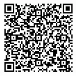

Este proyecto nace desde lo profundo del alma. Cada palabra escrita en este blog lleva consigo fragmentos de vivencias, pensamientos y anhelos que buscan tocar corazones y despertar conciencias. Aquí no se trata solo de letras, sino de un viaje compartido entre quien escribe y quien lee.
Si alguna vez una frase te estremeció, si algún relato te dio consuelo o una reflexión te hizo mirar dentro de ti, considera hacer una donación. Con tu gesto, no solo apoyas el tiempo y esfuerzo invertido, sino que das vida a nuevos escritos que esperan nacer.
Escanea el siguiente código QR con tu app Nequi para colaborar:
